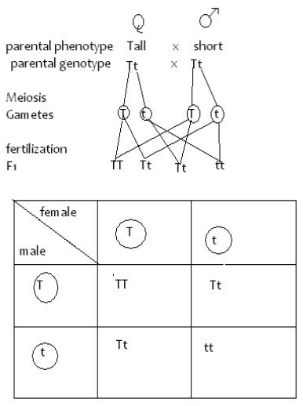

- To represent genes in the chromosomes, letters are used.
- It is customary to use a capital letter for the dominant characteristic and small letter for the recessive one.
- The gametes are encircled.
- For example,a cross between a tall and a short pea plant is illustrated as follows;
- Let – T- represent gene for tallness.
- Let - t- represent gene for shortness.
Fertilization - using checker board or Punnet square
F1 genotype Tt
F1 Phenotypic ratio = All tall.

F2 Genotype TT, 2Tt, tt
F2 Phenotypic ratio; 3 Tall : 1 short
Genetics